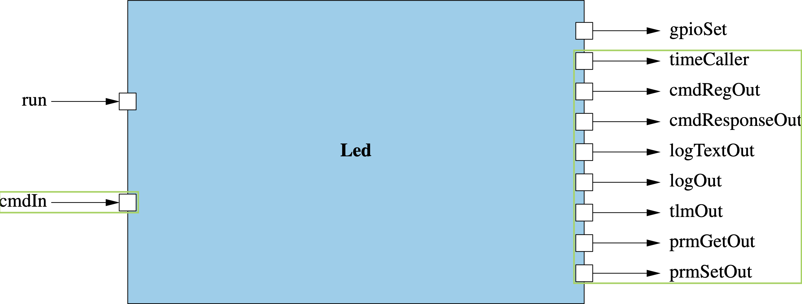

F´ LED Blinker Tutorial for Arduino-Supported Boards
This is designed to be an extended introductory F´ tutorial taking the user through the basics of creating components, using events, telemetry, commands, and parameters, and integrating topologies with the goal of running F´ on embedded hardware. This project is an implementation of the F´ LED Blinker ARM Linux Tutorial which will allow you to test on Arduino-based microcontrollers using the fprime-arduino and fprime-baremetal.
This version uses a scaled down deployment of F´ to account for the limited resources available on baremetal hardware.
Tip
The source for this tutorial is located here: https://github.com/fprime-community/fprime-arduino-led-blinker. If you are stuck at some point during the tutorial, you may refer to that reference as the "solution".
Prerequisites
In order to run through this tutorial, users should first do the following:
- Meet the F´ System Requirements
- Install an IDE or text editor supporting copy-paste. VSCode has plugins to work with FPP.
- Complete the Hello World Tutorial
- Acquire and set up the appropriate hardware as described in the
Appendix: Hardware Requirementsfor this tutorial
Important
If you do not have the hardware, you can still follow the LED Blinker tutorial! You should just skip the Hardware sections.
Tutorial Steps
This tutorial is composed of the following steps:
- Project Setup
- Building for Arduino
- Component Design and Initial Implementation
- Initial Component Integration
- Continuing Component Implementation
- Full System Integration
- Running on Hardware
1. LED Blinker: Project Setup
Note
If you have followed the HelloWorld tutorial previously, this should feel very familiar...
An F´ Project ties to a specific version of tools to work with F´. In order to create this project and install the correct version of tools, you should perform a bootstrap of F´:
- Ensure you meet the F´ System Requirements
- Bootstrap your F´ project with the name
arduino-led-blinker
Bootstrapping your F´ project created a folder called arduino-led-blinker (or any name you chose) containing the standard F´ project structure as well as the virtual environment up containing the tools to work with F´.
Navigate to your project directory and activate your virtual environment if you have not already done so:
Important
Follow the arduino-cli installation guide.
2. Building for Arduino Microcontrollers
This section will guide you on converting your project to build for Arduino microcontrollers using the fprime-arduino and fprime-baremetal packages.
Adding fprime-arduino
First, add the fprime-arduino package as a submodule into the lib/ directory.
# In arduino-led-blinker
git submodule add https://github.com/fprime-community/fprime-arduino.git lib/fprime-arduino
Add fprime-arduino as a library and change the default build toolchain to teensy41 in arduino-led-blinker/settings.ini after the framework path.
Note
If you would like to use a different board as your default toolchain, you may change teensy41 to your desired board. The list of available boards in the fprime-arduino toolchain can be found here.
Install fprime-arduino dependencies:
Adding fprime-baremetal
Next, add the fprime-baremetal package as a submodule into your project root.
# In arduino-led-blinker
git submodule add https://github.com/fprime-community/fprime-baremetal.git lib/fprime-baremetal
Add fprime-baremetal as an additional library alongside fprime-arduino into arduino-led-blinker/settings.ini, separated by a :. The complete library_locations should look like:
Add Arduino Deployment
In order to produce an executable to run the software, users need to create a deployment. A deployment is one software executable that contains the main entry point, and an F´ system topology. We will be using a custom deployment that autogenerates an Arduino deployment.
First, add the line into arduino-led-blinker/settings.ini below the default_toolchain:
deployment_cookiecutter: https://github.com/fprime-community/fprime-arduino-deployment-cookiecutter.git
Generate Build Cache
Now, you are ready to generate a build cache using the following command:
Note
Always remember to activate your project's virtual environment whenever you work with it.
3. LED Blinker: Component Design and Initial Implementation
The purpose of this exercise is to walk you through the creation and initial implementation of an F´ component to control the blinking of an LED. This section will discuss the design of the full component, the implementation of a command to start/stop the LED blinking, and the sending of events. Users will then proceed to the initial ground testing before finishing the implementation in a later section.
Component Design
In order for our component to blink an LED, it needs to accept a command to turn on the LED and drive a GPIO pin via a port call to the GPIO driver. It will also need a rate group input port to control the timing of the blink. Additionally, we will define events and telemetry channels to report component state, and a parameter to control the period of the blink.
This component design is captured in the block diagram below with input ports on the left and output ports on the right. Ports for standard F´ functions (e.g. commands, events, telemetry, and parameters) are circled in green.

In this exercise, the BLINKING_ON_OFF command shall toggle the blinking state of the LED. The period of the blinking is controlled by the BLINK_INTERVAL parameter. Blinking is implemented on the run rate group input port. The component also defines several telemetry channels and events describing the various actions taken by the component.
Design Summary
Component Ports:
1. run: invoked at a set rate from the rate group, used to control the LED blinking
2. gpioSet: invoked by the Led component to control the GPIO driver
Note
Standard component ports (circled in green) are not listed here.
Commands:
1. BLINKING_ON_OFF: turn the LED blinking on/off
Events:
1. InvalidBlinkArgument: emitted when an invalid argument was supplied to the BLINKING_ON_OFF command
2. SetBlinkingState: emitted when the component sets the blink state
3. BlinkIntervalSet: emitted when the component blink interval parameter is set
4. LedState: emitted when the LED is driven to a new state
Telemetry Channels:
1. BlinkingState: state of the LED blinking
2. LedTransitions: count of the LED transitions
Parameters:
1. BLINK_INTERVAL: LED blink period in number of rate group calls
Create the component
It is time to create the basic component. In a terminal, navigate to the project's root directory and run the following:
You will be prompted for information regarding your component. Fill out the prompts as shown below:[INFO] Cookiecutter source: using builtin
[1/8] Component name (MyComponent): Led
[2/8] Component short description (Component for F Prime FSW framework.): Component to blink an LED driven by a rate group
[3/8] Component namespace (Components): Components
[4/8] Select component kind
1 - active
2 - passive
3 - queued
Choose from [1/2/3] (1): 1
[5/8] Enable Commands?
1 - yes
2 - no
Choose from [1/2] (1): 1
[6/8] Enable Telemetry?
1 - yes
2 - no
Choose from [1/2] (1): 1
[7/8] Enable Events?
1 - yes
2 - no
Choose from [1/2] (1): 1
[8/8] Enable Parameters?
1 - yes
2 - no
Choose from [1/2] (1): 1
[INFO] Found CMake file at 'arduino-led-blinker/Components/CMakeLists.txt'
Add Led to arduino-led-blinker/Components/CMakeLists.txt at end of file? (yes/no) [yes]: yes
Generate implementation files? (yes/no) [yes]: yes
Refreshing cache and generating implementation files...
[INFO] Created new component and generated initial implementations.
arduinio-led-blinker/Components/Led.
Commands
Commands are used to command the component from the ground system or a command sequencer. We will add a command named BLINKING_ON_OFF to turn on or off the blinking LED. This command will take in an argument named onOff of type Fw.On.
Inside your arduino-led-blinker/Components/Led directory, open the file Led.fpp and search for the following:
# One async command/port is required for active components
# This should be overridden by the developers with a useful command/port
@ TODO
async command TODO opcode 0
Replace that block with the following:
@ Command to turn on or off the blinking LED
async command BLINKING_ON_OFF(
onOff: Fw.On @< Indicates whether the blinking should be on or off
)
Events
Events represent a log of system activities. Events are typically emitted any time the system takes an action. Events are also emitted to report off-nominal conditions.
Inside your arduino-led-blinker/Components/Led directory, open the Led.fpp file. After the command you added in the previous section, add this event:
@ Reports the state we set to blinking.
event SetBlinkingState($state: Fw.On) \
severity activity high \
format "Set blinking state to {}."
Note
state is a keyword in FPP. In order to use it as a variable name, you need to escape it by prepending $.
Do it yourself
Below is a table with tasks you must complete before moving on to the next section. These tasks require you to update the component's fpp file.
| Task | Solution |
|---|---|
1. Add an activity high event named BlinkIntervalSet to the fpp. The event takes an argument of U32 type to indicate the set interval. |
Answerevent BlinkIntervalSet(interval: U32) severity activity high format "LED blink interval set to {}" |
2. Add an activity low event named LedState to the fpp. The event takes an argument of Fw.On type to indicate the LED has been driven to a different state. |
Answerevent LedState(onOff: Fw.On) severity activity low format "LED is {}" |
You have completed the Command and Event design phase. We'll move on to the Command and Event implementation phase.
Component Implementation
In the arduino-led-blinker/Components/Led directory, run the following:
This command will auto generate two files: Led.template.hpp and Led.template.cpp. These files contain the stub implementation for the component's newly added command.
Since this is the start of the component's implementation, we can use the generated template files for our initial component implementation. Inside your arduino-led-blinker/Components/Led directory, rename Led.template.hpp to Led.hpp and rename Led.template.cpp to Led.cpp. You can rename the files through the terminal using the two commands below:
Verify your component is building correctly by running the following command in the arduino-led-blinker/Components/Led directory.
Tip
Append the flag -j4 or -j8 to build faster with more cores
Note
Fix any errors that occur before proceeding with the rest of the tutorial.
Component State
Many of the behaviors of the component discussed in the Component Design section require the tracking of some state. Before diving into the implementation of the behavior let us set up and initialize that state.
Open Led.hpp in arduino-led-blinker/Components/Led, and add the following private member variables to the end of the file.
Fw::On m_state = Fw::On::OFF; //! Keeps track if LED is on or off
U64 m_transitions = 0; //! The number of on/off transitions that have occurred from FSW boot up
U32 m_toggleCounter = 0; //! Keeps track of how many ticks the LED has been on for
bool m_blinking = false; //! Flag: if true then LED blinking will occur else no blinking will happen
Run the following in the arduino-led-blinker/Components/Led directory to verify your component is building correctly.
Now that the member variables are set up, we can continue into the component implementation.
Command
Now we will implement the behavior of the BLINKING_ON_OFF command. An initial implementation is shown below and may be copied into Led.cpp in-place of the BLINKING_ON_OFF command stub.
void Led ::BLINKING_ON_OFF_cmdHandler(FwOpcodeType opCode, U32 cmdSeq, Fw::On onOff) {
this->m_toggleCounter = 0; // Reset count on any successful command
this->m_blinking = Fw::On::ON == onOff; // Update blinking state
// TODO: Emit an event SetBlinkingState to report the blinking state (onOff).
// NOTE: This event will be added during the "Events" exercise.
// TODO: Report the blinking state (onOff) on channel BlinkingState.
// NOTE: This telemetry channel will be added during the "Telemetry" exercise.
// Provide command response
this->cmdResponse_out(opCode, cmdSeq, Fw::CmdResponse::OK);
}
Note
Fix any errors that occur before proceeding with the rest of the tutorial.
Events
Open Led.cpp in your arduino-led-blinker/Components/Led directory and navigate to the BLINKING_ON_OFF command. Report, via an event, the blinking state has been set.
To do so, replace:
// TODO: Emit an event SetBlinkingState to report the blinking state (onOff).
// NOTE: This event will be added during the "Events" exercise.
with:
Run the following to verify your component is building correctly.
Note
Resolve any fprime-util build errors before continuing
LED Blinker Step 3 Conclusion
Congratulations! You have now implemented some basic functionality in a new F´ component. Your command should look like this
void Led ::BLINKING_ON_OFF_cmdHandler(FwOpcodeType opCode, U32 cmdSeq, Fw::On onOff) {
this->m_toggleCounter = 0; // Reset count on any successful command
this->m_blinking = Fw::On::ON == onOff; // Update blinking state
this->log_ACTIVITY_HI_SetBlinkingState(onOff);
// TODO: Report the blinking state (onOff) on channel BlinkingState.
// NOTE: This telemetry channel will be added during the "Telemetry" exercise.
// Provide command response
this->cmdResponse_out(opCode, cmdSeq, Fw::CmdResponse::OK);
}
Before finishing the implementation, let's take a break and try running the above command through the ground system. This will require integrating the component into the system topology, which we will get into in the next section.
Note
The last TODO in the BLINKING_ON_OFF command handler will be addressed in a future section.
4. LED Blinker: Initial Component Integration
In this section, users will create a deployment and perform the initial integration of the LED component into that deployment. This deployment will automatically include the basic command and data handling setup needed to interact with the component. Wiring the Led component to the GPIO driver component will be covered in a later section after the component implementation has finished.
Note
Users must have created the initial Led component implementation in order to run through this section. Users may continue to define commands, events, telemetry, and ports after this initial integration.
Creating the LedBlinker Deployment
In order to produce an executable to run the software, users need to create a deployment. A deployment is one software executable that contains the main entry point, and an F´ system topology.
Create a new deployment in the arduino-led-blinker directory with:
Important
You must ensure that the deployment is using the arduino cookiecutter. To verify this, make sure the cookiecutter source displays references https://github.com/fprime-community/fprime-arduino-deployment-cookiecutter.git. If the cookiecutter source references builtin, ensure you followed the Add Arduino Deployment section.
This will ask for some input, respond with the following answers:
[INFO] Cookiecutter source: https://github.com/fprime-community/fprime-arduino-deployment-cookiecutter.git
[1/3] Deployment name (fprime-arduino-deployment): LedBlinker
[2/3] Select communication driver type
1 - UART
2 - TcpServer
3 - TcpClient
Choose from [1/2/3] (1): 1
[3/3] Select file system type
1 - None
2 - SD_Card
3 - MicroFS
Choose from [1/2/3] (1): 1
[INFO] Found CMake file at 'arduino-led-blinker/project.cmake'
Add LedBlinker to arduino-led-blinker/project.cmake at end of file? (yes/no) [yes]: yes
[INFO] New deployment successfully created: /home/ethan/fprime-projects/arduino-led-blinker/LedBlinker
Note
Use the default response for any other questions asked.
In order to check that the deployment was created successfully, the user can build the deployment. This will build the code for the current host system, not the remote embedded hardware allowing local testing during development.
Note
This will reuse the build cache created during the project creation. CMake warnings may appear to indicate that the build cache is refreshing. The build should start shortly thereafter.
Adding Led Component To The Deployment
The component can now be added to the deployment's topology effectively adding this component to the running system. This is done by modifying instances.fpp and topology.fpp in the Top directory.
Add the following to arduino-led-blinker/LedBlinker/Top/instances.fpp. Typically, this is added to the "Active component instances" section of that document.
instance led: Components.Led base id 0x0E00 \
queue size Default.QUEUE_SIZE \
stack size Default.STACK_SIZE \
priority 95
This defines an instance of the Led component called led. Since the component is active it needs a queue size, stack size, and priority for the thread of the component and the queue that thread serves. We have chosen the topology specified defaults and a priority of 95.
Next, the topology needs to use the above definition. This is done by adding the led instance to the list of instances defined in arduino-led-blinker/LedBlinker/Top/topology.fpp:
# ----------------------------------------------------------------------
# Instances used in the topology
# ----------------------------------------------------------------------
instance led
Note
No port connections need to be added because thus far the component only defines standard ports and those are connected automatically.
Build your deployment
Testing the Topology
Note
You may now plug in your Arduino board into your computer. Find the connected usb device by running ls /dev/tty*.
For Linux users, it should be along the lines of /dev/ttyUSB0 or /dev/ttyACM0.
For macOS users, it should be along the lines of /dev/cu.usbmodem12345.
For Windows WSL2 users, you must bind your device to the WSL2 instance. Instructions can be found here.
For Windows WSL1 users, it should be along the lines of /dev/ttyS1, where S1 indicates COM1. Determine the COM port of your board by running usbipd on PowerShell or looking it up in Windows Device Manager.
First, you must upload the binary into your board. The binary is located in the arduino-led-blinker/build-artifacts/<YOUR_TOOLCHAIN>/LedBlinker/bin/. Refer to the upload guides in the board list to upload the correct binary to your board of choice.
Open the fprime-gds by running the following command:
fprime-gds -n --dictionary ../build-artifacts/teensy41/LedBlinker/dict/LedBlinkerTopologyDictionary.json --communication-selection uart --uart-device /dev/ttyACM0 --uart-baud 115200
http://localhost:5000.
Note
Adjust /dev/ttyACM0 accordingly to the device port of the board.
Adjust teensy41 accordingly to your board of choice.
Test the component integration with the following steps:
1. Verify connection: confirm that there is a green circle and not a red X in the upper right corner.
2. Send a Command: select the 'Commanding' tab, search for led.BLINKING_ON_OFF and send it with the argument set to ON.
3. Verify Event: select the 'Events' tab and verify that the SetBlinkingState event reports the blinking state was set to ON.
CTRL-C to stop the F´ GDS program.
LED Blinker Step 4 Conclusion
Congratulations! You have now integrated your component and tested that integration.
Return to the arduino-led-blinker/LedBlinker and run the following commands to test whenever you desire.
# In arduino-led-blinker/LedBlinker
fprime-util build
fprime-gds -n --dictionary ../build-artifacts/teensy41/LedBlinker/dict/LedBlinkerTopologyDictionary.json --communication-selection uart --uart-device /dev/ttyACM0 --uart-baud 115200
# CTRL-C to exit
This tutorial will return to the component implementation before finishing the integration of the component and testing on hardware.
5. LED Blinker: Component Design and Implementation, Continued
In this section, we will complete the component design and implementation by adding telemetry, parameters, and ports; and implementing the behavior of the run port, which is called by the rate-group.
Note
Refer back to the component design for explanations of what each of these items is intended to do.
Continued Component Design
Telemetry
Telemetry channels represent the state of the system. Typically, telemetry channels are defined for any states that give crucial insight into the component's behavior.
Inside your arduino-led-blinker/Components/Led directory, open the Led.fpp file. After the events you added in the previous section, add a telemetry channel of type Fw.On to report the blinking state.
Do it yourself
Below is a table with a task you must complete before moving on to the next section. This task require you to update the component's fpp file.
| Task | Solution |
|---|---|
1. Add a telemetry channel LedTransitions of type U64 to count LED Transitions to Led.fpp. |
Answertelemetry LedTransitions: U64 |
Parameters
Parameters are ground-controllable settings for the system. Parameters are used to set settings of the system that the ground may need to change at some point during the lifetime of the system. This tutorial sets one parameter, the blink interval.
For each parameter you define in your fpp, the F´ autocoder will autogenerate a SET and SAVE command. The SET command allows ground to update the parameter. The SAVE command tells your parameter database to stage this new parameter value for saving. To save the parameter for use on a FSW reboot, ground will need to send the PRM_SAVE_FILE command.
In your arduino-led-blinker/Components/Led directory, open the Led.fpp file. After the telemetry channels you added previously, add a parameter for the blinking interval. Give the parameter the name BLINK_INTERVAL, type U32, and a default value. It is good practice to assign parameters a valid default value.
Additional Ports
Any communication between components should be accomplished through F´ ports. Thus far we have been using a set of standard ports for handling Commands, Telemetry, Events, and Parameters. This section will add two specific ports to our component: input run to be called from the rate group, and output gpioSet to drive the GPIO driver.
In your arduino-led-blinker/Components/Led directory, open the Led.fpp file. After the parameters you added previously, add the following two ports:
@ Port receiving calls from the rate group
async input port run: Svc.Sched
@ Port sending calls to the GPIO driver
output port gpioSet: Drv.GpioWrite
Note
Input and output ports can be given any name that you choose. In this example, we choose run and gpioSet since these names capture the behavioral intent. The types of Svc.Sched and Drv.GpioWrite are significant as these types must match the remote component.
Continued Component Implementation
Input Port Implementation
In your arduino-led-blinker/Components/Led directory, run the following to autogenerate stub functions for the run input port we just added.
In your arduino-led-blinker/Components/Led directory, open Led.template.hpp file and copy this block over to Led.hpp.
PRIVATE:
// ----------------------------------------------------------------------
// Handler implementations for user-defined typed input ports
// ----------------------------------------------------------------------
//! Handler implementation for run
//!
//! Port receiving calls from the rate group
void run_handler(FwIndexType portNum, //!< The port number
U32 context //!< The call order
) override;
In your arduino-led-blinker/Components/Led directory, open Led.template.cpp file and copy this block over to Led.cpp.
// ----------------------------------------------------------------------
// Handler implementations for user-defined typed input ports
// ----------------------------------------------------------------------
void Led ::run_handler(FwIndexType portNum, U32 context) {
// TODO
}
Note
Copying from the template file and pasting into your implementation file is a pattern in F Prime that is often used when adding new input ports or commands.
The run port will be invoked repeatedly on each cycle of the rate group. Each invocation will call into the run_handler function such that the component may perform behavior on each cycle.
Here we want to turn the LED on or OFF based on a cycle count to implement the "blinking" behavior we desire.
Copy the run_handler implementation below into your run_handler. Try filling in the TODOs based on what you learned and defined in previous sections.
Note
Don't forget to read the code and comments to understand more about how to use F´.
void Led ::run_handler(FwIndexType portNum, U32 context) {
// Read back the parameter value
Fw::ParamValid isValid = Fw::ParamValid::INVALID;
U32 interval = this->paramGet_BLINK_INTERVAL(isValid);
// Force interval to be 1 when invalid or not set
interval = ((Fw::ParamValid::INVALID == isValid) || (Fw::ParamValid::UNINIT == isValid)) ? 1 : interval;
// Only perform actions when set to blinking
if (this->m_blinking && (interval != 0)) {
// If toggling state
if (this->m_toggleCounter == 0) {
// Toggle state
this->m_state = (this->m_state == Fw::On::ON) ? Fw::On::OFF : Fw::On::ON;
this->m_transitions++;
// TODO: Report the number of LED transitions (this->m_transitions) on channel LedTransitions
// Port may not be connected, so check before sending output
if (this->isConnected_gpioSet_OutputPort(0)) {
this->gpioSet_out(0, (Fw::On::ON == this->m_state) ? Fw::Logic::HIGH : Fw::Logic::LOW);
}
// TODO: Emit an event LedState to report the LED state (this->m_state).
}
this->m_toggleCounter = (this->m_toggleCounter + 1) % interval;
}
// We are not blinking
else {
if (this->m_state == Fw::On::ON) {
// Port may not be connected, so check before sending output
if (this->isConnected_gpioSet_OutputPort(0)) {
this->gpioSet_out(0, Fw::Logic::LOW);
}
this->m_state = Fw::On::OFF;
// TODO: Emit an event LedState to report the LED state (this->m_state).
}
}
}
Note
Fix any errors that occur before proceeding with the rest of the tutorial.
Command Implementation Continued
Inside your arduino-led-blinker/Components/Led directory, open Led.cpp, and navigate to the BLINKING_ON_OFF command. Report the blinking state via the telemetry channel we just added. To do so, replace the following:
// TODO: Report the blinking state (onOff) on channel BlinkingState.
// NOTE: This telemetry channel will be added during the "Telemetry" exercise.
with the function to send the telemetry channel:
In the terminal, run the following to verify your component is building correctly.
Note
Fix any errors that occur before proceeding with the rest of the tutorial.
Parameter Implementation
When ground updates a component's parameter, the user may want the component to react to the parameter update. F Prime provides a function called parameterUpdated where your component can react to each parameter update. Implementing parameterUpdated for a component is optional but we'll implement it for this tutorial.
In your arduino-led-blinker/Components/Led directory, open the file Led.hpp and add the following function signature in the PRIVATE: scope:
//! Emit parameter updated EVR
//!
void parameterUpdated(FwPrmIdType id //!< The parameter ID
) override;
This function is called when a parameter is updated via the auto generated SET command. Although the value is updated automatically, this function gives developers a chance to respond to changing parameters. This tutorial uses it to emit an event.
Save file and in your arduino-led-blinker/Components/Led directory, open Led.cpp and add the implementation for parameterUpdated:
void Led ::parameterUpdated(FwPrmIdType id) {
Fw::ParamValid isValid = Fw::ParamValid::INVALID;
switch (id) {
case PARAMID_BLINK_INTERVAL: {
// Read back the parameter value
const U32 interval = this->paramGet_BLINK_INTERVAL(isValid);
// NOTE: isValid is always VALID in parameterUpdated as it was just properly set
FW_ASSERT(isValid == Fw::ParamValid::VALID, static_cast<FwAssertArgType>(isValid));
// Emit the blink interval set event
// TODO: Emit an event with, severity activity high, named BlinkIntervalSet that takes in an argument of
// type U32 to report the blink interval.
break;
}
default:
FW_ASSERT(0, static_cast<FwAssertArgType>(id));
break;
}
}
In the terminal, run the following to verify your component is building correctly.
Note
Resolve any errors before continuing
Do it Yourself
Below is a table with tasks you must complete. These tasks require you to go back into the component's code and add the missing function calls.
| Task | Solution |
|---|---|
Inside the parameterUpdated function, emit an activity high event named BlinkIntervalSet that takes in an argument of type U32 to report the blink interval. |
Answerthis->log_ACTIVITY_HI_BlinkIntervalSet(interval); |
Inside the run_handler port handler, report the number of LED transitions (this->m_transitions) on channel LedTransitions. |
Answerthis->tlmWrite_LedTransitions(this->m_transitions); |
Inside the run_handler port handler, emit an event LedState to report the LED state (this->m_state). There are two places to add this event. |
Answerthis->log_ACTIVITY_LO_LedState(this->m_state); |
Tip
Emitting an event follows this pattern: this->log_<severity>_<eventName>(<argument_if_any>);
[!TIP]
Emitting a telemetry channel follows this pattern: this->tlmWrite_<telemetryChannel>(<telemetryValue>);
[!TIP]
After running fprime-util build, your IDE should be able to autocomplete these functions.
LED Blinker Step 5 Conclusion
Congratulations! You just completed the implementation of your component. It is time for full system integration!
6. LED Blinker: Full System Integration
Now it is time to add a GPIO driver to our system and attach it to the led component instance. We'll also connect the led component instance to a 1 Hz rate group. Finally, we'll configure the driver to manage the GPIO LED_BUILTIN pin on our hardware. Once this section is finished, the system is ready for running on hardware.
Adding the GPIO Driver to the Topology
fprime-arduino provides a GPIO driver for Arduino microcontrollers called Arduino.GpioDriver. This should be added to both the instance definition list and the topology instance list just like we did for the led component. Since the GPIO driver is a passive component, its definition is a bit more simple.
Add to "Passive Component" section of led-blinker/LedBLinker/Top/instance.fpp:
Add to the instance list of led-blinker/LedBlinker/Top/topology.fpp:
Note
In led-blinker/LedBlinker build the deployment and resolve any errors before continuing.
Wiring The led Component Instance to the gpioComponent Component Instance and Rate Group
The Led component defines the gpioSet output port and the Arduino.GpioDriver defines the gpioWrite input port. These two ports need to be connected from output to input. The ActiveRateGroup component defines an array of ports called RateGroupMemberOut and one of these needs to be connected to run port defined on the Led component.
We can create a named connections block in the topology and connect the two port pairs. Remember to use the component instances and not the component definitions for each connection.
To do this, add the following lines to led-blinker/LedBLinker/Top/topology.fpp:
# Named connection group
connections LedBlinker {
# Rate Group 1 (1Hz cycle) ouput is connected to led's run input
rateGroup1.RateGroupMemberOut[3] -> led.run
# led's gpioSet output is connected to gpioDriver's gpioWrite input
led.gpioSet -> gpioDriver.gpioWrite
}
Note
rateGroup1 is preconfigured to call all RateGroupMemberOut at a rate of 1 Hz. We use index RateGroupMemberOut[3] because RateGroupMemberOut[0] through RateGroupMemberOut[2] were used previously in the RateGroups connection block.
Configuring The GPIO Driver
So far the GPIO driver has been instantiated and wired, but has not been told what GPIO pin to control. For this tutorial, the built-in LED will be used. To configure this, the open function needs to be called in the topology's C++ implementation and passed the pin's number and direction.
This is done by adding the following line to the end of the configureTopology function defined in led-blinker/LedBLinker/Top/LedBLinkerTopology.cpp.
void configureTopology() {
gpioDriver.open(Arduino::DEF_LED_BUILTIN, Arduino::GpioDriver::GpioDirection::OUT);
}
This code tells the GPIO driver to open pin LED_BUILTIN (usually pin 13) as an output pin. If your device does not have a built in LED, select a GPIO pin of your choice.
Note
In led-blinker/LedBlinker build the deployment and resolve any errors before continuing.
LED Blinker Step 6 Conclusion
Congratulations! You've wired your component to the rate group driver and GPIO driver components. It is time to try it on your hardware.
7. LED Blinker: Running on Hardware
Now it is time to run on hardware. Ensure the microcontroller is connected to the host machine via USB.
First, upload the binary file to the board after building. Reference the board list for guidance on uploading the binaries for your board.
Next run the F´ GDS without launching the native compilation (-n) and with the dictionary from the build above (--dictionary ./build-artifacts/teensy41/LedBlinker/dict/LedBlinkerTopologyDictionary.json). Connect it to the USB device by adding the --communication-selection, --uart-device, and --uart-baud flags
# In the project root
fprime-gds -n --dictionary ./build-artifacts/teensy41/LedBlinker/dict/LedBlinkerTopologyDictionary.json --communication-selection uart --uart-device /dev/ttyACM0 --uart-baud 115200
Note
Adjust /dev/ttyACM0 accordingly to the device port of the board.
Adjust teensy41 accordingly to your board of choice.
For MacOS users, you may have to install pyserial: pip install pyserial
You should be able to view the GDS on http://localhost:5000/. The green circle should now appear on the top right of F´ GDS.
Testing the Topology
Test the component integration with the following steps:
- Verify connection: confirm that there is a green circle and not a red X in the upper right corner.
- Send a Command: select the 'Commanding' tab, search for led.BLINKING_ON_OFF and send it with the argument set to ON.
- Verify Event: select the 'Events' tab and verify that the SetBlinkingState event reports the blinking state was set to ON.
- Repeat steps 2 and 3 to turn the LED OFF.
- Verify Telemetry: select the 'Channels' tab and verify that the LedBlinker telemetries appear.
LED Blinker Step 7 Conclusion
Congratulations you've now run on hardware. The final section of this tutorial is to test the component via some system tests!
8. LED Blinker: Conclusion
Congratulations! You have now completed the F´ Arduino on-hardware tutorial. You should now have a solid understanding of building an F´ project that runs on hardware!
Appendix: Hardware Requirements
Users will need at least one hardware element to follow the LED Blinker tutorial: an embedded Arduino-based microcontroller with an on-board LED. If there is no on-board LED, you will need an external LED capable of withstanding the operating voltage.
Arduino Microcontroller Requirements
The microcontroller must have sufficient FLASH memory and SRAM to run F´. The current requirements are at least 140 KB of FLASH memory and 30 KB of RAM.
Wiring Diagram
For this tutorial, the on-board LED pin will be used (LED_BUILTIN). For most Arduino microcontrollers, this is GPIO pin 13. For platforms that do not have an on-board LED pin readily available, another pin should be chosen, noted, and used in-place of LED_BUILTIN (13).